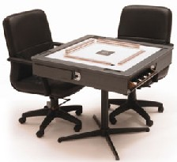

（３９）手動卓
|
雀話のカテゴリーと思ったが、用具のことなのでこちらにupした。
麻雀界最大のメディア、麻雀業界日報の９月１日号で紹介されたのでご存知の方も多いと思うが、すごく感心したので改めて紹介することにした。
麻雀は年配者のリハリビにとても良いという。
「ゲーム中の思考力と判断力や、点数の計算などに加え、脳と密接な関係にある手を積極的に動かして牌を混ぜるため、脳の活性化が期待できる。またゲームを通じて対戦相手と積極的にコミュニケーションを図ることができるので、心身両面でのリハビリ効果が得られる」そうだ。
しかし全自動卓は便利この上ないが、とにかく高い。新品のフルセットなら100万近い。中古品でも程度が良ければ数十万円。そこで一般では手積み卓が普通。
しかし初心者や年配者は、山積みがどうも苦手。２段に積み損なって、バッシャーン！ということをよく見かける。そこで上段を５，６枚づつ順番に載せてゆく人もときどき見かける。
山積みは、単なる準備段階。そんな準備段階で手間どるのでは、本末転倒。そこでリハリビ用品に力を入れているフランスベッドが、そういう年配者用のために手動卓を開発したという。

この写真ではよく分からないが、こんな仕掛けになっている。
(1)レバー操作で溝を下げて１段目を積む。
(2)さらにレバー操作で溝を下げて2段目の牌を積む。
(3)2段積み終わったらレバー操作で持ち上げれば完成
詳しくはココを。
まさに上げてダメなら、下げてみな。コペルニクスの逆転発想。
卓だけで20万というのが高いのか値打ちなのかよく分からないが、全自動卓よりはるかに安いことだけはたしか。
う〜ん、もう10年もしたら、購入を考えようかしらん....(-_-；
＃別にフランスベッドの回し者ではない。(^-^；
|
7743MA 投稿日：2012/10/18(Thu)
同様のしくみがポ○モンのポンジャンで採用されてるのは内緒だ！
|
あさみ 投稿日：2012/10/19(Fri)
おぉそうですか、それは牌山を造るのが楽そうですね(^-^)v
さっそく関連ページを見てみましたが、掲載の写真からはどんな仕組みかよく分かりませんでした(^-^；
いずれにしても今年のクリスマス、孫へのサンタプレゼントはポンジャンに決定？
|
7743MA 投稿日：2012/10/24(Wed)
> さっそく関連ページを見てみましたが、掲載の写真からはどんな仕組みかよく分かりませんでした(^-^；
基本的には紹介されている手動卓のと同様です。
おもちゃとしてのローコストな構造上、
・壁牌と一段下げの二段階のみ
・レバーは4っとも連動
だったはず(少し前のモデルだとそうだった)です。
|
あさみ 投稿日：2012/10/25(Thu)
なるほろ、東急ハンズ？にでも行く機会があれば見てきます(^^)/
|